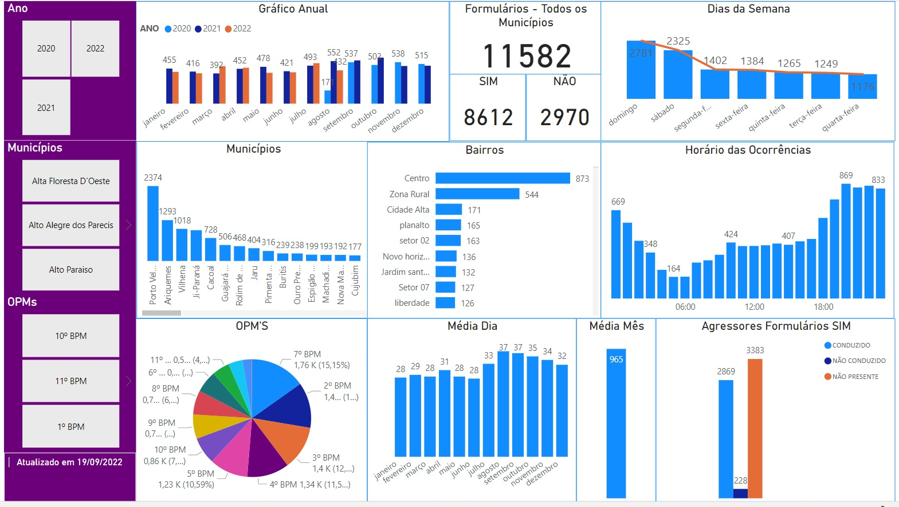
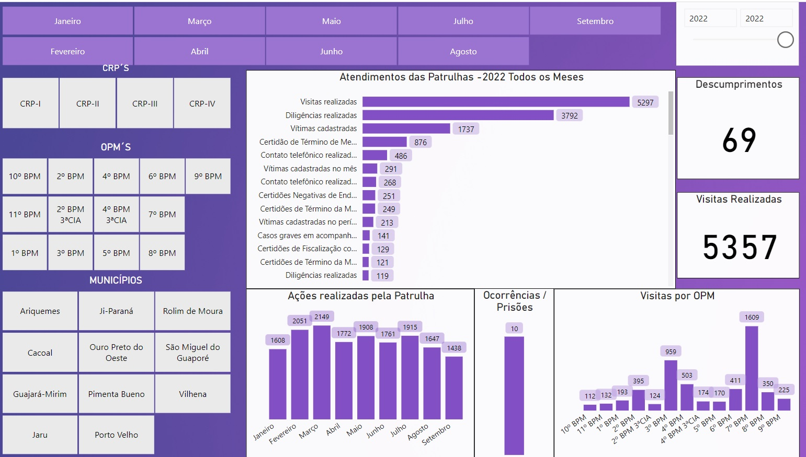
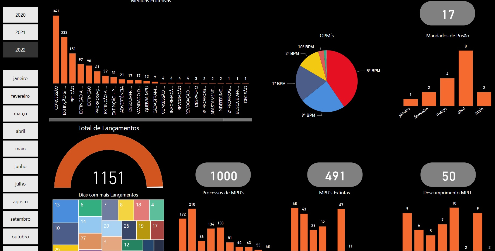
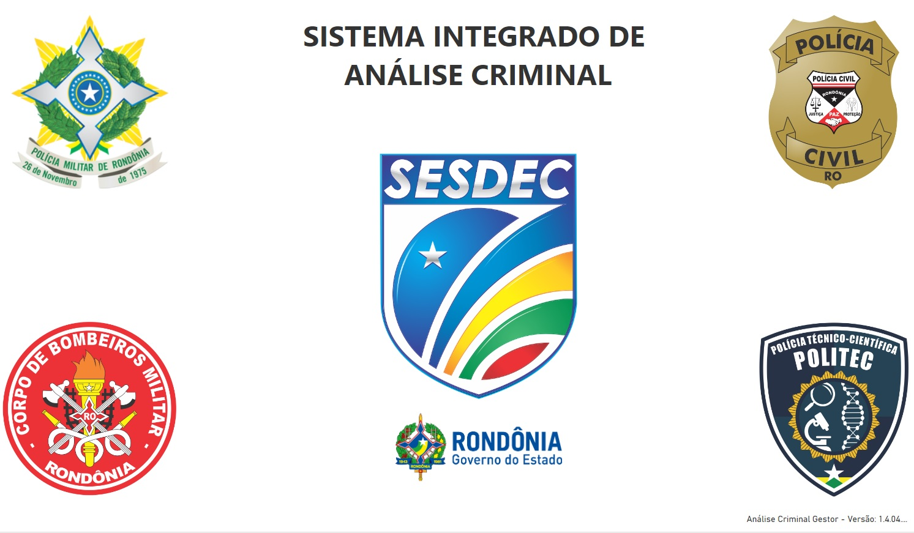
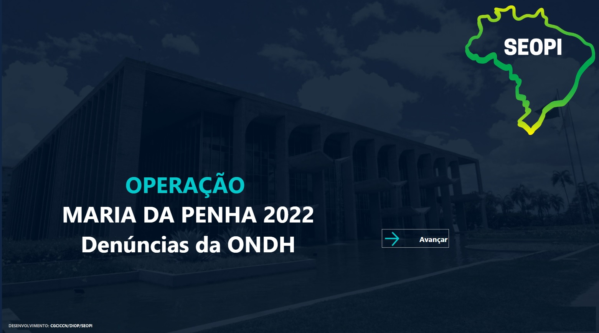

Núcleo de Prevenção e Enfrentamento a Violência Doméstia e Familiar Contra a Mulher - NUPEVID Estatísticas - Violência Doméstica SISEG - Formulários de Violência Doméstica /* SISEG - Formulários de Violência Doméstica  */ Ocorrências Estaduais de Violência Doméstica Atendimentos das Patrulha Maria da Penha  Atendimentos dos Analistas da CEMMPU - Central de Monitoramento Analíse Criminal  Operação Maria da Penha 2022 